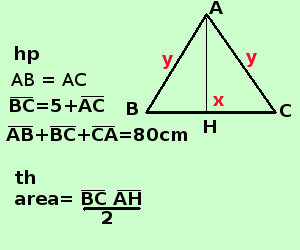

|
apprendimento Risolvere il seguente problema Dato il triangolo isocele ABC, sapendo che la base BC supera di cm 5 il lato obliquo e che il perimetro vale 80 cm trovarne l'area A destra traccio la figura e scrivo l'ipotesi(hp) e la tesi(th)  Per scrivere l'ipotesi scorro il testo e lo riscrivo in linguaggio geometrico triangolo isoscele scrivo AB=AC supera di 5 il lato obliquo scrivo BC=5+AC il perimetro vale 80 scrivo AB+BC+ca=80 Scrivo il perimetro per esteso e ricordo che nel triangolo isoscele i lati obliqui sono uguali Ora prova a trovare la soluzione partendo dalla tesi: La tesi dice che devi trovare l'area: per trovare l'area di un triangolo ti serve ........ con le relazioni che hai puoi trovare...... poi potrai applicare ........ |